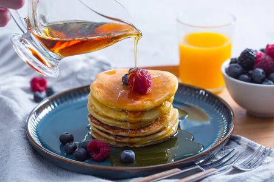

Pancakes

Ricetta
Soffici frittelle da servire alla maniera classica, con lo sciroppo appunto, oppure con confetture, cioccolato fuso, frutta fresca e panna montata. Ogni giorno si può realizzare un pancake diverso anche come impasto:
Ingredienti
Per circa 12 pancakes
- Farina 00 125g
- Latte intero 200g
- Burro 25g
- Zucchero 15g
- Uova 2
- Lievito in polvere per dolci 6g
- Sale fino 1 pizzico
Per guarnire
- Sciroppo d'acero
- Nutella
Preparazione
- Per realizzare i pancake per prima cosa fate sciogliere il burro a fuoco bassissimo, poi lasciate intiepidire. Intanto separate gli albumi dai tuorli: versate i tuorli in una ciotola e sbatteteli con una frusta a mano 1, poi unite il burro fuso a temperatura ambiente 2 e il latte a filo 3, continuando sempre a mescolare con la frusta. Aggiungete anche un pizzico di sale e montate il composto finché non risulterà chiaro.
- Unite il lievito alla farina 4 e setacciate tutto nella ciotola con il composto di tuorli 5. Mescolate ancora per incorporare le polveri 6.
- Ora montate gli albumi che avete tenuto da parte, versando poco alla volta lo zucchero 7. Quando saranno bianchi e spumosi incorporateli delicatamente al composto di tuorli, con movimenti dal basso verso l'alto, per evitare di smontarli 8. Scaldate a fuoco medio una crepiera o una padella antiaderente (meglio se a fondo spesso) e ungetela con pochissimo burro aiutandovi con della carta da cucina. Versate al centro del pentolino un mestolino di compostoe
- Dopo circa 2 minuti inizieranno a comparire delle bollicine in superficie, quindi girate il pancake con una spatolina 10 e fate dorare anche l'altro lato per circa mezzo minuto 11. Proseguite così con il resto dell'impasto e disponete man mano i pancake su un piatto da portata, impilandoli uno sull'altro; con queste dosi otterrete all'incirca 12 pancake. Servite i vostri pancake allo sciroppo d'acero ancora caldi 12!
Back to Index